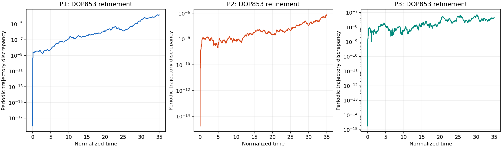
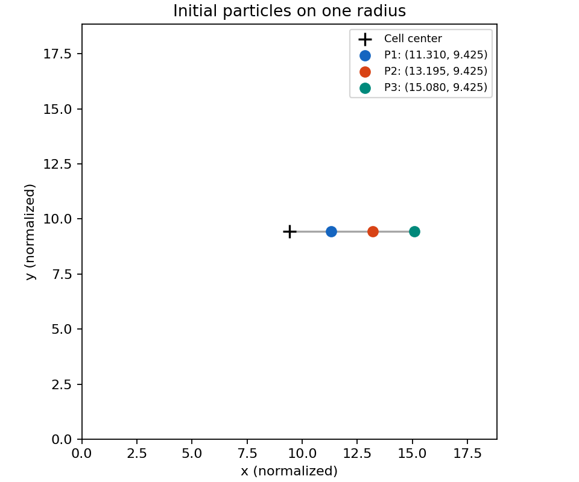
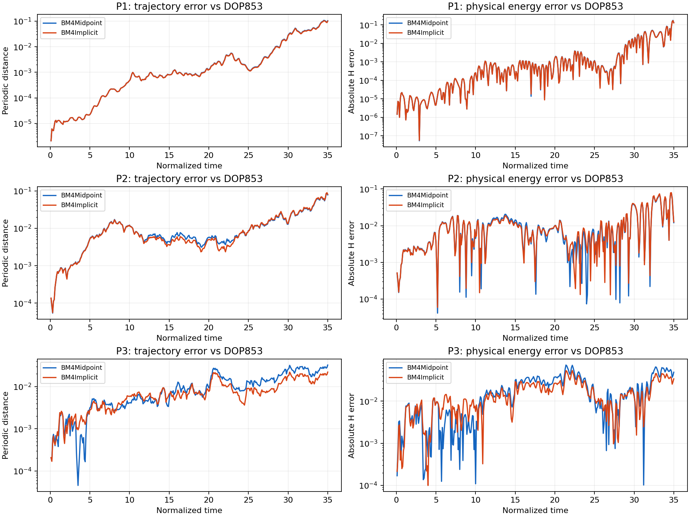
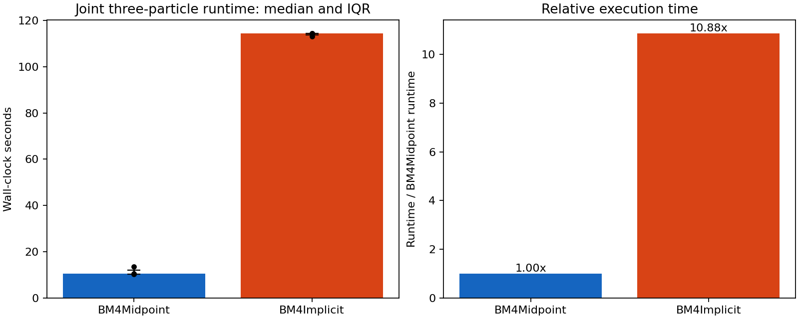
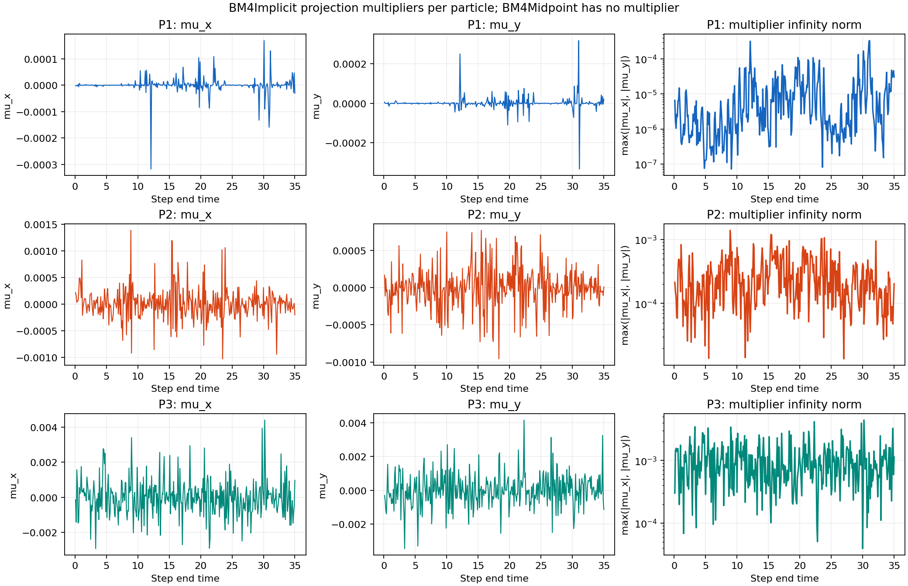
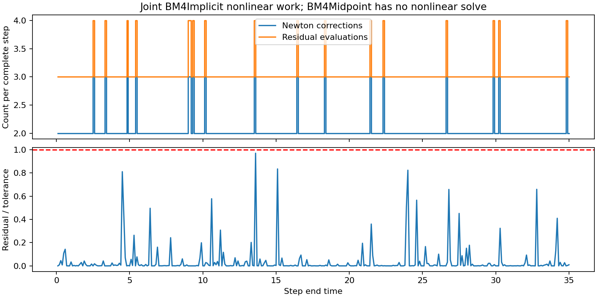

Normalized time [0, 35]; 350 complete steps. Three radial starts; no averaging across particles.
| Particle | Method | Trajectory RMS | Final distance | Max distance | Energy RMS | Max absolute energy error |
|---|---|---|---|---|---|---|
| P1 | BM4Midpoint | 2.272252e-02 | 1.040805e-01 | 1.076526e-01 | 1.909518e-02 | 1.762470e-01 |
| P1 | BM4Implicit | 2.190973e-02 | 1.004223e-01 | 1.036961e-01 | 1.847430e-02 | 1.706162e-01 |
| P2 | BM4Midpoint | 1.864707e-02 | 7.889055e-02 | 8.667294e-02 | 1.725527e-02 | 7.629701e-02 |
| P2 | BM4Implicit | 1.921020e-02 | 8.203743e-02 | 9.007525e-02 | 1.768906e-02 | 7.933604e-02 |
| P3 | BM4Midpoint | 1.348860e-02 | 3.234153e-02 | 3.234153e-02 | 2.593407e-02 | 7.192157e-02 |
| P3 | BM4Implicit | 9.626861e-03 | 2.203231e-02 | 2.203231e-02 | 1.955849e-02 | 5.329708e-02 |
Trajectory error uses minimum-image periodic distance. RMS is the trapezoidal time integral of squared error divided by elapsed time, then square-rooted. Energy error compares the physical Hamiltonian history, not conservation.
| Particle | State / method at final time | x | y |
|---|---|---|---|
| P1 | initial | 11.309733553 | 9.424777961 |
| P1 | DOP853 | 12.246385864 | 10.422737517 |
| P1 | BM4Midpoint | 12.312636248 | 10.342465241 |
| P1 | BM4Implicit | 12.310807693 | 10.345702083 |
| P2 | initial | 13.194689145 | 9.424777961 |
| P2 | DOP853 | 6.700883280 | 7.208059282 |
| P2 | BM4Midpoint | 6.774282294 | 7.179140355 |
| P2 | BM4Implicit | 6.777254739 | 7.178100322 |
| P3 | initial | 15.079644737 | 9.424777961 |
| P3 | DOP853 | 10.828627076 | 3.761844796 |
| P3 | BM4Midpoint | 10.858471171 | 3.774306927 |
| P3 | BM4Implicit | 10.848919997 | 3.770425009 |
| Particle | Mean | RMS | Maximum | Final |
|---|---|---|---|---|
| P1 | 1.530782e-05 | 4.005028e-05 | 3.326615e-04 | 3.048353e-05 |
| P2 | 2.727779e-04 | 3.549290e-04 | 1.384898e-03 | 2.027356e-04 |
| P3 | 1.014868e-03 | 1.254887e-03 | 4.393775e-03 | 1.131317e-03 |
Multiplier statistics use all accepted steps. BM4Midpoint has no multiplier. Projection occurs once after each complete twelve-stage BM4 map.
| Method | Median seconds | Q1 seconds | Q3 seconds |
|---|---|---|---|
| BM4Midpoint | 10.512118 | 10.403302 | 12.071495 |
| BM4Implicit | 114.346333 | 113.744556 | 114.424608 |
These are measured joint integrations, not per-particle timings; they are not divided by three. One warm-up, three alternating serial repetitions, one BLAS thread. Reference generation and diagnostic replay excluded.
| Particle | RMS discrepancy | Maximum discrepancy |
|---|---|---|
| P1 | 3.170229e-05 | 1.512943e-04 |
| P2 | 1.466653e-07 | 7.545511e-07 |
| P3 | 2.575873e-08 | 6.911308e-08 |

Float64 arithmetic (53-bit significand) is distinct from integration accuracy. DOP853 tolerances: rtol=5e-13, atol=5e-15, max_step=0.0025. Coarser reference: 1e-12, 1e-14, 0.005. Refinement uses all saved reference nodes. The measured discrepancy is not a rigorous error bound. No independent analytic trajectory is available.





{
"config": {
"rho": 0.3,
"coupling_frequency": 0.39269908169872414,
"t_span": [
0.0,
35.0
],
"integration_step": 0.1,
"save_interval": 0.1,
"absolute_tolerance": 1e-12,
"relative_tolerance": 1e-11,
"max_iterations": 40,
"jacobian_relative_step": 6.0554544523933395e-06,
"reference_relative_tolerance": 5e-13,
"reference_absolute_tolerance": 5e-15,
"reference_maximum_step": 0.0025,
"timing_warmups": 1,
"timing_repeats": 3,
"distance_convention": "periodic",
"progress": true
},
"potential_parameters": {
"B": 1.5,
"characteristic_length": 0.06,
"indx": [
0,
1
],
"interpolation_order": 3,
"spatial_normalization": "characteristic_length"
},
"particles": [
{
"particle": "P1",
"methods": {
"BM4Midpoint": {
"trajectory_rms": 0.02272251551116666,
"trajectory_final": 0.104080505353989,
"trajectory_max": 0.1076526337938052,
"energy_rms": 0.01909517964481428,
"energy_max": 0.17624703243854611
},
"BM4Implicit": {
"trajectory_rms": 0.021909730580632454,
"trajectory_final": 0.10042225865468445,
"trajectory_max": 0.10369611226736446,
"energy_rms": 0.018474297387173197,
"energy_max": 0.1706161505170698
}
},
"positions": {
"initial": [
11.309733552918114,
9.424777960765095
],
"DOP853": [
12.246385864197027,
10.422737516563517
],
"BM4Midpoint": [
12.312636248253758,
10.342465241106312
],
"BM4Implicit": [
12.31080769310007,
10.345702083196167
]
},
"mu": {
"mean": 1.5307824356284404e-05,
"rms": 4.0050281977665234e-05,
"maximum": 0.00033266149333089343,
"final": 3.048352976152353e-05
},
"reference_refinement": {
"rms": 3.170229276631921e-05,
"maximum": 0.00015129425275042552
}
},
{
"particle": "P2",
"methods": {
"BM4Midpoint": {
"trajectory_rms": 0.01864707344413423,
"trajectory_final": 0.07889055464193741,
"trajectory_max": 0.08667294320750296,
"energy_rms": 0.017255268772050393,
"energy_max": 0.07629701391423538
},
"BM4Implicit": {
"trajectory_rms": 0.01921019905050563,
"trajectory_final": 0.08203742521862839,
"trajectory_max": 0.09007525287887488,
"energy_rms": 0.017689062294704537,
"energy_max": 0.07933604284395557
}
},
"positions": {
"initial": [
13.194689145071132,
9.424777960765095
],
"DOP853": [
6.700883279509449,
7.208059281702873
],
"BM4Midpoint": [
6.774282293626836,
7.1791403547119215
],
"BM4Implicit": [
6.777254739341458,
7.178100322114302
]
},
"mu": {
"mean": 0.00027277785171715696,
"rms": 0.00035492903427773156,
"maximum": 0.0013848981684878663,
"final": 0.000202735612561264
},
"reference_refinement": {
"rms": 1.466652686720761e-07,
"maximum": 7.545510690097534e-07
}
},
{
"particle": "P3",
"methods": {
"BM4Midpoint": {
"trajectory_rms": 0.013488604774287148,
"trajectory_final": 0.032341532771735244,
"trajectory_max": 0.032341532771735244,
"energy_rms": 0.025934072600002373,
"energy_max": 0.07192156631764846
},
"BM4Implicit": {
"trajectory_rms": 0.009626860674948494,
"trajectory_final": 0.022032311192043883,
"trajectory_max": 0.022032311192043883,
"energy_rms": 0.019558485212985626,
"energy_max": 0.053297083133340806
}
},
"positions": {
"initial": [
15.07964473722415,
9.424777960765095
],
"DOP853": [
10.828627075700188,
3.7618447955578462
],
"BM4Midpoint": [
10.858471170801305,
3.774306927382727
],
"BM4Implicit": [
10.848919997478475,
3.770425008967976
]
},
"mu": {
"mean": 0.0010148679985645729,
"rms": 0.0012548866016727895,
"maximum": 0.004393775361148039,
"final": 0.0011313167688306533
},
"reference_refinement": {
"rms": 2.57587291262276e-08,
"maximum": 6.911308073146886e-08
}
}
],
"joint_runtime_seconds": {
"BM4Midpoint": {
"runtime_median_seconds": 10.5121182629955,
"runtime_q1_seconds": 10.403302105998591,
"runtime_q3_seconds": 12.071494767995318
},
"BM4Implicit": {
"runtime_median_seconds": 114.34633275099623,
"runtime_q1_seconds": 113.74455584899988,
"runtime_q3_seconds": 114.42460846050017
}
},
"joint_nonlinear_work": {
"solves_per_step": 1,
"mean_iterations": 2.0485714285714285,
"max_iterations": 3,
"total_iterations": 717,
"mean_residual_evaluations": 3.0485714285714285,
"total_residual_evaluations": 1067,
"maximum_residual_to_tolerance": 0.9698155828807198
}
}